# Exercise 1 (2 minutes). In your browser; no R needed.
# Start from the request on the slide:
# https://api.worldbank.org/v2/country/IND/indicator/EG.ELC.ACCS.ZS?date=2023&format=json
#
# 1. Replace IND with another country's three-letter code:
# CHN China, BGD Bangladesh, KEN Kenya, NGA Nigeria,
# ETH Ethiopia, BRA Brazil, or your own country's.
# 2. Change date=2023 to date=2000.
# A first request can take up to a minute. Wait, or reload the page.
#
# Two answers to compare with the room: your country's access to
# electricity (% of population) in 2023 and in 2000.14 · Channels I: APIs
Thursday, October 15, 2026
Slides · Live script · Source · the project
How to get data from an API into R, from the general ideas to the specific. The session starts with what an API is and two studies built on one. It takes one World Bank request apart in the browser, then requests every page of the same series from R: access to electricity by country. With a key, it requests a year of hourly electricity demand on New York’s grid from the EIA and finds the hour of the June 2025 heat-wave peak. It ends by asking a language model, through its API, to label each of the 266 names in the World Bank table as an economy or a group of economies. It compares the labels with the World Bank’s own list, and asks when to call a model from R and when to have a model write R.
The project. Download 14-apis.zip, unzip it, and open 14-apis.Rproj, so that R starts in the project folder. It holds:
wb_functions.R: the functionsfetch()andflat()for the World Bank requests.model_call.R: builds the request to the language model and sends nothing.model_send.Rsends it and needs a key of your own.saved/: every reply the slides and exercises use, exactly as the servers sent it. With these files you can follow every parsing step with no key and no network.raw/: empty. Your own requests write their replies here.SOURCE.txt: each source, its address, the date of each request, and its terms of use.
Objectives
By the end of this session you can:
- Explain what an API is and when to use one instead of downloading a file or scraping a page.
- Read a request URL: its endpoint, its query parameters and its key.
- Read a reply’s status code and its JSON body.
- Send a request from R with
httr2. - Turn a JSON reply into a data frame with
fromJSON(). - Request every page of a long result and compare the rows with the total the API reports.
- Save each raw reply with
writeLines()and rebuild the table from the saved files. - Store an API key in
~/.Renvironand confirm it loaded without printing it. - Send a prompt to a language model from R.
- Read the model’s reply into a data frame.
- Measure a model’s labels against a reference list.
- Decide when to call a model from R and when to have a model write R.
- Keep API keys out of a repository and away from a coding agent.
Plan for today
- APIs and why economists use them
Three ways to get data · who offers APIs · what a script gains · two studies - The parts of a request and its reply
The URL · JSON · status codes · pages · rate limits and terms of use - Requesting World Bank data from R
httr2· an error inside a reply marked OK · JSON to a data frame · every page · saving the raw reply - Hourly electricity demand from the EIA, with an API key
Keys in~/.Renviron· every hour of 2025 · a year in one figure · the heat-wave peak - Calling a language model’s API
Your own key · labelling 266 names · tokens and cost · when to call a model from R · keys and coding agents
In the R Console, while Part 1 starts: install.packages(c("httr2", "jsonlite")). Before Part 3: unzip 14-apis.zip and open 14-apis.Rproj.
1 · APIs and why economists use them
Three ways to get data from someone else’s computer
![Three lanes that reach the same World Bank series, access to electricity by country. Download a file: a person clicks Download, then CSV, on the series' web page, and a file lands in Downloads. Request it from an API: a program sends a web address and gets back a structured reply. Scrape a page: a program reads the page built for people and picks the numbers out of its layout. Under each lane: who does the work (you, your program, your program), what comes back (a file, a structured reply, the page's HTML) and when it fits (one download; repeated or many requests; no file and no API).](figures/14-apis/D01-three-ways.png)
API (application programming interface): a service that answers requests sent by a program, with a reply in a fixed structure. Server: the computer that holds the data and answers requests. HTML: the text a web page is written in. JSON: a plain-text format for data.
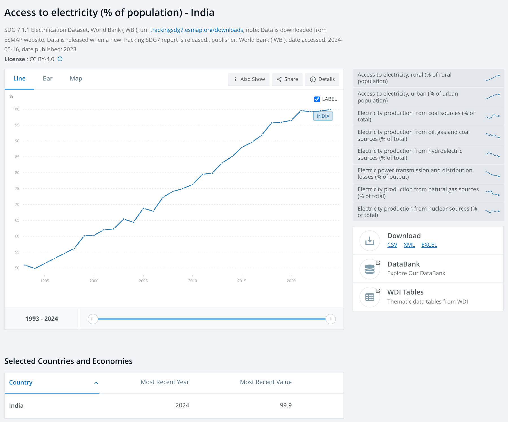
A download suits a file you need once. An API suits requests you repeat or send many times. It is also the only route to data that has no download, such as a travel time between two points or a model’s reply. Scraping, reading the numbers out of a page built for people, is the route when there is neither a file nor an API.
Who offers APIs, and which need a key or a payment
| Kind | Source | What you get | Key | Cost |
|---|---|---|---|---|
| Public statistics | World Bank | indicators by country and year | none | free |
| Public statistics | EIA | hourly grid data, energy prices | free, after sign-up | free |
| Platform | Google Maps Platform | travel times, places | key and a billing account | per request |
| Model provider | a company that runs a language model | written replies to prompts | key and prepaid credits | by the amount of text sent and written |
World Bank: an international development lender. It publishes indicators (data series, such as access to electricity) for 217 economies (countries and territories). EIA: the US government’s statistics agency for energy (the Energy Information Administration). Platform: a company whose website or app is where people search, post or trade. Language model: the program behind a chat assistant. Key: a private string that identifies you to the service and counts your requests.
Two more statistical sources with APIs, often used in economics: Eurostat, the European Union’s statistics office (no key), and FRED, a database of economic series from the St. Louis branch of the US central bank (a free key).
What a script gains over a manual download
- The script records the request: its web address (URL) names the series, the places and the years.
- The script saves each reply as it arrived, so you can rebuild the table without asking again.
- When the source revises its numbers, you run the script again.
- Some data have no download, such as travel times or a model’s reply. A script can request them.
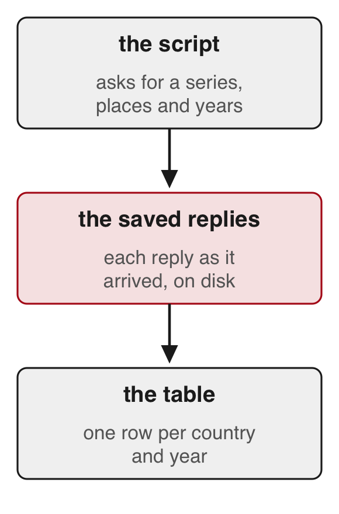
Travel speeds in 180 Indian cities, from Google Maps
Akbar, Couture, Duranton & Storeygard (AER, 2023)
- Question
- How fast can people travel by car within Indian cities, and how much does traffic slow them?
- What they did
- They sent 57 million requests to Google Maps’ API: 2.7 million car trips in 180 cities, each at about 21 departure times.
- One trip in three ended at a business or landmark listed on Google Places; the rest joined random points.
- They compared these times with trips people actually took.
- Finding
- Average travel speed differs widely from one city to another.
- Most of that difference comes from how fast cars move on empty roads; congestion, the slowdown from traffic, explains less.
- Larger, denser cities are slower, only partly because of congestion.
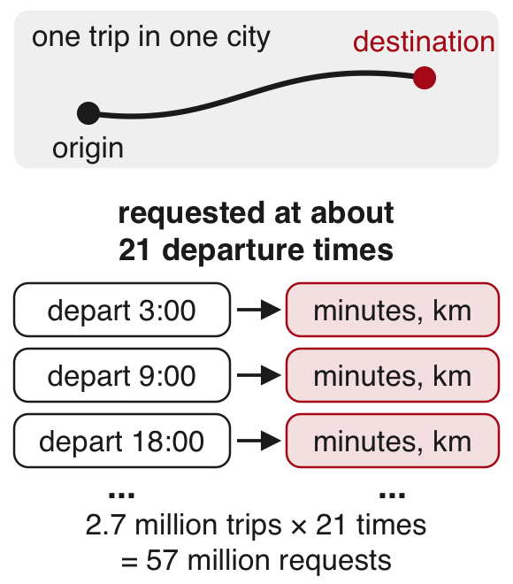
Takeaway: an API can produce data no agency publishes, and the authors compared it with records of real trips before using it.
Early Twitter users by county, from Twitter’s API
Fujiwara, Müller & Schwarz (JEEA, 2024)
- Question
- Did Twitter change how people in the US voted?
- What they did
- Twitter (now X) use grew quickly after South by Southwest (SXSW), a festival in Austin, Texas, in March 2007.
- They pulled the profiles of about 658,000 followers of the festival’s account through Twitter’s API.
- Join dates and typed locations placed early users in US counties.
- Counties with more sign-ups during the 2007 festival had more Twitter users years later.
- Those sign-ups are unrelated to how counties voted before Twitter, so the study uses them to compare votes across counties.
- Finding
- Twitter lowered the vote share of the Republican Party, one of the two main US parties, in the 2016 and 2020 presidential elections, with little effect on elections to Congress (the US legislature).
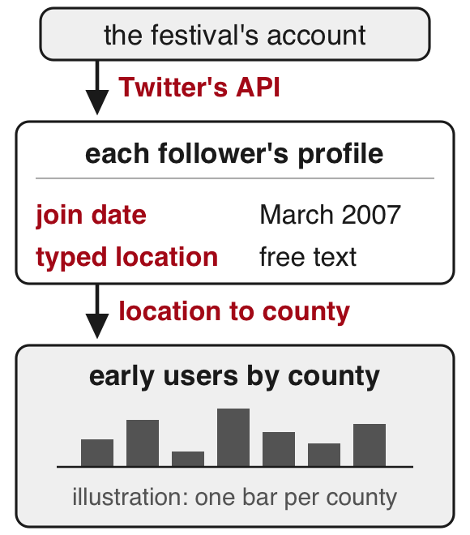
Takeaway: an API returns what the platform records (here, what users typed in their profiles), and the researcher decides what each field measures.
2 · The parts of a request and its reply
A request and its reply
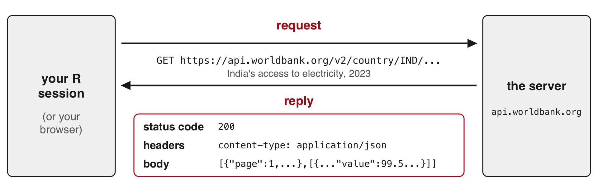
- GET: the kind of request that asks for data, with everything written in the URL.
- Reply, also called a response: what comes back.
- Status code: a three-digit number that says if the request worked, such as 200.
- Header: a labelled line sent with a request or reply, apart from the data, such as the body’s format (
content-type) or how many requests you have left. - Body: the data itself.
Requesting India’s access to electricity in your browser
The request. Open this address in your browser to send a request to the World Bank’s server: https://api.worldbank.org/v2/country/IND/indicator/EG.ELC.ACCS.ZS?date=2023&format=json
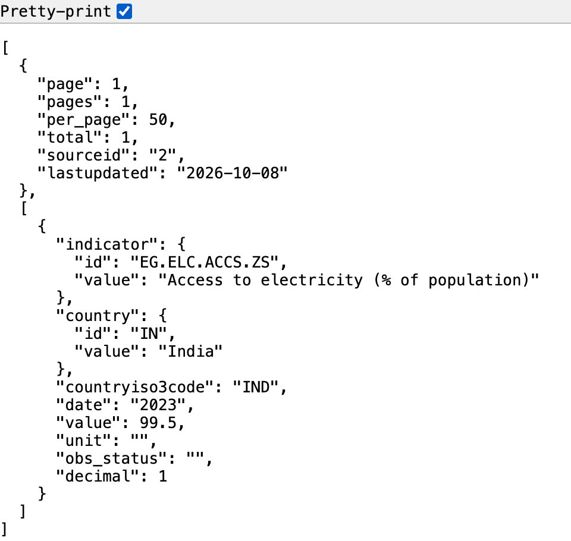
The reply. The text on the left is the body of the server’s reply, in JSON. Here the browser indents it (Pretty-print ticked); other browsers show one long line or a tree you can expand. The status code (200, it worked) arrives too but stays out of view.
In JSON (JavaScript Object Notation), names and values come in pairs ("value": 99.5). Braces { } hold one record; square brackets [ ] hold a list.
Hands up: what number do you see, and what does it measure?
The parts of the request URL
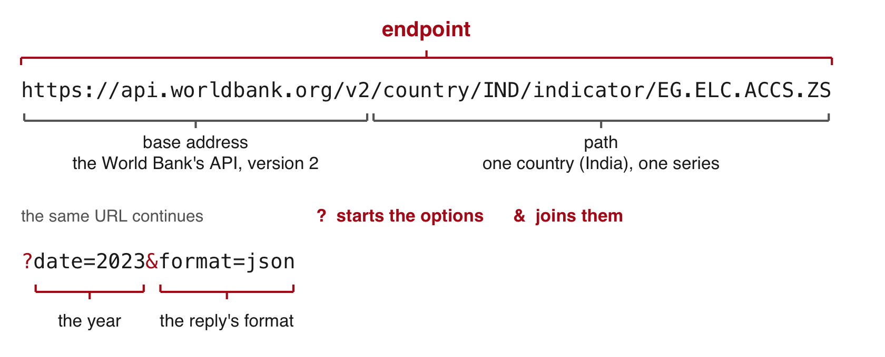
- Endpoint: the web address that answers one kind of request.
- Query parameter: a named option after the
?that narrows what comes back.date=2000:2023asks for a range of years. - Without
format=json, the World Bank replies in XML, another text format. - Indicator code: the World Bank’s name for one series.
EG.ELC.ACCS.ZSis “Access to electricity (% of population)”. - This API needs no key. The EIA takes its key as one more parameter (
api_key=...), and model providers take it in a header.
Documentation: the World Bank’s Indicators API · the EIA’s API
Reading the reply in JSON format
![On the left, the reply to the India request: a list whose first part, the page information, holds page 1, pages 1, per_page 50, total 1, sourceid 2 and lastupdated 2026-10-08, and whose second part, the records, holds one record: the indicator, the country India nested inside country, countryiso3code IND, date 2023 and value 99.5. Arrows lead to a row of a data frame on the right: country India, iso3 IND, year 2023, access 99.5. A note over the row: iso3 is the three-letter code, access is the % of population.](figures/14-apis/D06-json-to-row.png)
- The reply to the India request has two parts: page information first, then the records.
- The country’s name sits one level down, inside
"country". - A CSV holds one flat table, so it cannot carry these two parts or values inside values.
Status codes in every reply
| Code | Meaning | Example |
|---|---|---|
| 200 | it worked | the India request |
| 400 | the server cannot read the request | |
| 401, 403 | the key is missing or refused | the EIA with no key: 403, "API_KEY_MISSING" |
| 404 | no such address | a misspelled path, /v2/countryy/IND/... |
| 429 | more requests than the service allows per minute, hour or day | the EIA’s shared DEMO_KEY, used up: "OVER_RATE_LIMIT" |
| 500 and above | the server failed; try again later | a 5,000-row EIA page: 504 after 61 seconds |
httr2, the R package used below, stops with an error at 400 and above. A 200 can still hold an error message in its body.
A browser shows the status of every request in its developer tools: open them (right-click the page, then Inspect), choose the Network tab, and reload the page.
Long results arrive in pages
Replace IND with all in the request to get one row for each of 217 economies and 49 groups of economies, such as regions and income groups. The reply starts "page": 1, "pages": 6, "per_page": 50, "total": 266.
- Pagination: a long result split into pages, which you request one after another with
page=1,page=2, and so on. totalcounts the rows on all pages.pagescounts the requests atper_pagerows each.- You have every row when your count equals
total.
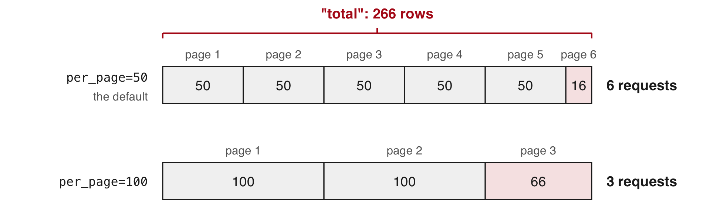
Rate limits on requests
- Rate limit: the most requests a service accepts from you per minute, hour or day. Above it, the reply is 429.
- The World Bank code in this session waits one second between requests.
Two header lines of an EIA reply sent with DEMO_KEY, a key everyone shares
x-ratelimit-limit: 10
x-ratelimit-remaining: 2- In these two lines the limit is 10 requests, and 2 are left. The headers do not say over what period.
- The EIA counts them per internet address, and a classroom shares one, so the class reads the saved replies.
The EIA’s API also accepts api_key=DEMO_KEY, a key shared by everyone. Its replies reported a limit of 10 requests (x-ratelimit-limit: 10), counted per internet address, and a classroom on one network shares a single address, so it is often used up. Register for your own key (Part 4) instead.
Terms of use for the data an API returns
Terms of use: the rules a source sets on what you may do with its data. Read them before you build a dataset on an API.
| Source | Terms | What they mean for you |
|---|---|---|
| World Bank | Creative Commons Attribution licence | reuse it, with credit to the source |
| EIA | US government work, in the public domain (no copyright) | use it freely; the EIA asks for a source line |
| Google Maps Platform | its terms of service | you may not store what it returns, apart from a few short-term exceptions |
| Twitter (now X) | its developer terms | free research access ended |
Sources: World Bank data licences; EIA copyright and reuse; Google Maps Platform terms; X developer terms.
The World Development Indicators carry the Creative Commons Attribution 4.0 licence. The EIA’s data are in the public domain; the EIA asks users to cite it as “Source: U.S. Energy Information Administration (date)”. Google’s terms restrict storing or caching what its Maps services return. Twitter ended its free access for researchers.
Exercise 1
Start from the India request. Country codes: the World Bank’s country list (search the page for your country’s name; its code is the id just before it).
| 2000 | 2023 | |
|---|---|---|
| India | 60.3 | 99.5 |
| China | 96.7 | 100.0 |
| Bangladesh | 32.0 | 99.5 |
| Kenya | 15.2 | 76.2 |
| Nigeria | 43.2 | 61.2 |
| Ethiopia | 12.7 | 55.4 |
| Brazil | 94.4 | 99.8 |
Access to electricity (% of population), World Bank (EG.ELC.ACCS.ZS)
A colon gives a range of years: date=2000:2023 returns total 24, one row per year, newest first.
3 · Requesting World Bank data from R
Sending the request from R with httr2
R Console; needs internet and the httr2 package
# install.packages(c("httr2", "jsonlite")) # once; jsonlite does not come with httr2
library(httr2)
req <- request("https://api.worldbank.org/v2/country/all/indicator/EG.ELC.ACCS.ZS")
req <- req_url_query(req, date = 2023, format = "json", per_page = 100, page = 1)
req
#> <httr2_request>
#> GET https://api.worldbank.org/v2/country/all/indicator/EG.ELC.ACCS.ZS?date=2023&format=json&per_page=100&page=1
#> Body: empty
resp <- req_perform(req)
resp_status(resp)
#> [1] 200- The request: access to electricity (% of population) in 2023 for every country and group (
country/all), page 1 at 100 rows a page. httr2: an R package that writes and sends web requests.request()takes the address.req_url_query()adds the parameters after the?.- Printing
reqshows the exact URL. Nothing has been sent yet. req_perform()sends it and waits for the reply.resp_status()reads the status code.
A status 200 whose body holds an error
R Console, in the 14-apis folder; needs internet and httr2
bad <- request("https://api.worldbank.org/v2/country/all/indicator/EG.ELC.ACCS.ZZ")
bad <- req_url_query(bad, date = 2023, format = "json")
resp_bad <- req_perform(bad)
resp_status(resp_bad)
#> [1] 200
writeLines(resp_body_string(resp_bad))
#> [{"message":[{"id":"120","key":"Invalid value","value":"The provided parameter value is not valid"}]}]
# no network? writeLines(readLines("saved/wb_bad_code.json")) shows the same body- The indicator code ends in ZZ instead of ZS.
resp_body_string()returns the reply’s body as text."key":"Invalid value"names the error. This"key"is a field of the JSON, unrelated to API keys.- The misspelled path
countryyreturns status 404, andreq_perform()stops R withHTTP 404 Not Found. - This 200 passes
req_perform()with no error. The parsing steps below fail on it later withsubscript out of bounds, a message that does not name the typo. - Read the body of every reply and count its rows.
Reading the JSON reply into R with fromJSON()
R Console, in the 14-apis folder; needs jsonlite and resp from the httr2 request (or the saved file)
library(jsonlite)
first <- fromJSON(resp_body_string(resp))
# no network? first <- fromJSON("saved/wb_2023_p1.json") gives the same
str(first[[1]])#> List of 6
#> $ page : int 1
#> $ pages : int 3
#> $ per_page : int 100
#> $ total : int 266
#> $ sourceid : chr "2"
#> $ lastupdated: chr "2026-10-08"d <- first[[2]]
dim(d)#> [1] 100 8names(d)#> [1] "indicator" "country" "countryiso3code" "date"
#> [5] "value" "unit" "obs_status" "decimal"fromJSON()turns JSON text into R lists and data frames.firstis a list, R’s container for parts of different kinds:first[[1]]holds the page information (3 pages, 266 rows in all),first[[2]]this page’s 100 records.
Flattening the records into a data frame
R Console; needs d, the records of the first page
class(d$country) # a data frame inside the data frame#> [1] "data.frame"wb1 <- data.frame(country = d$country$value, iso3 = d$countryiso3code,
year = d$date, access = d$value)
head(wb1, 3)#> country iso3 year access
#> 1 Africa Eastern and Southern AFE 2023 50.66752
#> 2 Africa Western and Central AFW 2023 57.06474
#> 3 Arab World ARB 2023 91.64543wb1[wb1$iso3 == "IND", ]#> [1] country iso3 year access
#> <0 rows> (or 0-length row.names)- Flatten: turn nested fields into plain columns, one value per cell.
d$countryholds two columns, an id and the name.$valuetakes the name.accessis the share of the population with electricity, in percent.- India is missing: this page holds 100 of the 266 rows, and India is on the second page.
fetch() to request and save one page, flat() to flatten it
wb_functions.R (part), in the 14-apis folder; needs httr2 and jsonlite
dir.create("raw", showWarnings = FALSE)
fetch <- function(p, year, per) {
req <- request("https://api.worldbank.org/v2/country/all/indicator/EG.ELC.ACCS.ZS")
req <- req_url_query(req, date = year, format = "json", per_page = per, page = p)
txt <- resp_body_string(req_perform(req))
writeLines(txt, paste0("raw/wb_", year, "_p", p, ".json")) # the reply as sent
Sys.sleep(1) # one request a second
fromJSON(txt)
}
flat <- function(reply) {
d <- reply[[2]]
data.frame(country = d$country$value, iso3 = d$countryiso3code,
year = d$date, access = d$value)
}- Run
source("wb_functions.R")to define both functions. The file ships in the project. fetch(p, year, per)requests pagepof one year atperrows a page, writes the reply toraw/as sent, waits one second, and returns it parsed.- Raw reply: the reply exactly as the server sent it, saved before any parsing.
flat()turns one parsed reply into the four-column table.
Requesting all pages and comparing rows with the total
R Console, in the 14-apis folder; needs internet, fetch() and flat(); writes three replies to raw/
first <- fetch(1, 2023, 100)
replies <- lapply(1:first[[1]]$pages, fetch, year = 2023, per = 100)
wb <- do.call(rbind, lapply(replies, flat))
c(rows = nrow(wb), total = first[[1]]$total)
#> rows total
#> 266 266
wb[wb$iso3 == "IND", ]
#> country iso3 year access
#> 139 India IND 2023 99.5- Page 1’s information gives the number of pages (3) and the total (266).
lapply()callsfetch()once per page, passingyearandperon to it.do.call(rbind, ...)stacks the three pages into one table.- The rows received equal the total the API reports.
- Rows 1 to 49 are groups of economies (regions, income and lending groups, World). Rows 50 to 266 are the 217 economies.
per_page=300 returns all 266 rows in one page, so this series needs no loop. The loop is for the series that do not fit: most APIs cap the page size, and the EIA caps it at 5,000 rows.
httr2 also has helpers for paging and rate limits. req_perform_iterative() with iterate_with_offset() requests page after page until the last one. req_throttle() spaces the requests, req_retry() sends a request again after a 429 or a 503, and req_timeout() sets how long to wait for a slow reply (a 5,000-row EIA page once returned a 504, a timeout at the server, after 61 seconds). The same table as above, with the helpers:
R Console; needs internet, httr2, jsonlite and flat()
req <- request("https://api.worldbank.org/v2/country/all/indicator/EG.ELC.ACCS.ZS")
req <- req_url_query(req, date = 2023, format = "json", per_page = 100)
req <- req_throttle(req, capacity = 1, fill_time_s = 1) # one request a second
req <- req_retry(req, max_tries = 3) # again after a 429 or 503
req <- req_timeout(req, 90) # wait up to 90 seconds
resps <- req_perform_iterative(req,
next_req = iterate_with_offset("page",
resp_pages = function(resp) fromJSON(resp_body_string(resp))[[1]]$pages),
max_reqs = Inf)
wb <- do.call(rbind, lapply(resps, function(r) flat(fromJSON(resp_body_string(r)))))
nrow(wb)Rebuilding the table from the saved replies
R Console, in the 14-apis folder; needs jsonlite and flat() from wb_functions.R; reads saved/ (yours: raw/)
replies <- lapply(paste0("saved/wb_2023_p", 1:3, ".json"), fromJSON)
wb <- do.call(rbind, lapply(replies, flat))
nrow(wb)#> [1] 266replies[[1]][[1]]$lastupdated#> [1] "2026-10-08"lastupdatedis the date the World Bank last revised the series. The saved files keep the version your results used.- A request eight days before these reported 265 rows. Its reply was not saved, so nobody can say which row was added.
- A reply can take a minute to arrive. The saved files rebuild the table with no new request.
R packages that write the request for you
For the most used sources, an R package writes the request, sends it and returns a data frame. All six are on CRAN, R’s package archive.
| Package | Source | Needs |
|---|---|---|
WDI |
World Bank indicators | nothing |
fredr |
FRED | a free key |
tidycensus |
US Census Bureau (the agency that runs the US census and its household surveys) | a free key |
rnassqs |
USDA NASS Quick Stats (US farm statistics: crops, livestock, prices) | a free key |
eia |
EIA | a free key |
ellmer |
language models from several providers | the provider’s key |
R Console; needs internet and the WDI package
library(WDI) # install.packages("WDI") once
w <- WDI(country = "all", indicator = c(access = "EG.ELC.ACCS.ZS"),
start = 2023, end = 2023)
nrow(w) # compare with the total the API reportsThey send the same requests for you, so save what they return, with saveRDS() or write.csv(), the day you request it.
Exercise 2
# Exercise 2 (5 minutes). R Console, in the 14-apis folder.
# First run source("wb_functions.R"), which defines fetch() and flat().
# No network? Skip the requests and run
# replies0 <- lapply(paste0("saved/wb_2000_p", 1:6, ".json"), fromJSON)
# first0 <- replies0[[1]]
#
# 1. Request page 1 of the year 2000 with 50 rows a page:
# first0 <- fetch(1, 2000, 50). How many pages? What total?
# 2. Request every page into replies0 with lapply(), then stack them:
# wb0 <- do.call(rbind, lapply(replies0, flat))
# 3. Compare nrow(wb0) with the total.
# 4. Find India's row (iso3 is "IND").
#
# Two answers to compare with the room: the rows against the
# reported total, and India's access to electricity in 2000.R Console, in the 14-apis folder; needs jsonlite, flat() and the six saved replies
# With the network: first0 <- fetch(1, 2000, 50), then
# replies0 <- lapply(1:first0[[1]]$pages, fetch, year = 2000, per = 50)
replies0 <- lapply(paste0("saved/wb_2000_p", 1:6, ".json"), fromJSON)
first0 <- replies0[[1]]
c(pages = first0[[1]]$pages, total = first0[[1]]$total)#> pages total
#> 6 266wb0 <- do.call(rbind, lapply(replies0, flat))
c(rows = nrow(wb0), total = first0[[1]]$total)#> rows total
#> 266 266wb0[wb0$iso3 == "IND", ]#> country iso3 year access
#> 139 India IND 2000 60.3Page 6 holds 16 rows. sum(is.na(wb0$access)) is 7: the “Not classified” group and six economies (American Samoa, Guinea-Bissau, North Korea, Kosovo, Liberia, South Sudan).
4 · Hourly electricity demand from the EIA, with an API key
Hourly demand on New York’s grid, from the EIA
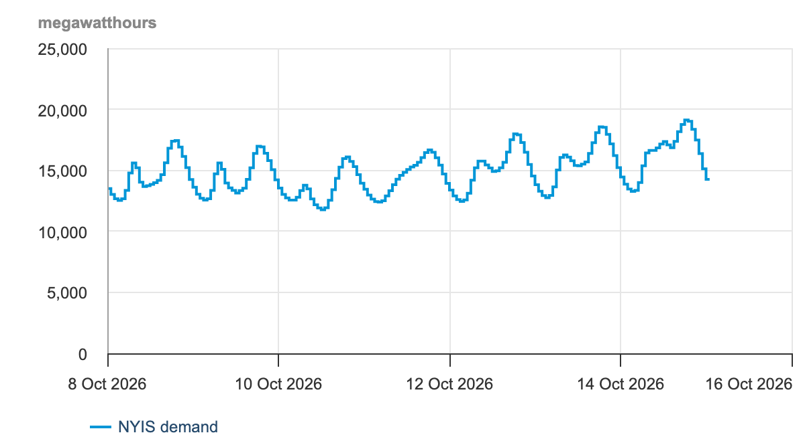
- The EIA publishes the hourly demand of each grid operator in the 48 contiguous US states (all but Alaska and Hawaii).
- NYISO (New York Independent System Operator) runs New York State’s grid, Ithaca included. EIA code:
NYIS. - Left: a week of NYISO’s demand on the EIA’s Hourly Electric Grid Monitor, its page for people. Below: the API’s first row, in R.
R Console, in the 14-apis folder; needs jsonlite and saved/eia_nyis_0.json
p1 <- fromJSON("saved/eia_nyis_0.json")
p1$response$data[1, c("period", "respondent", "type",
"type-name", "value", "value-units")]#> period respondent type type-name value value-units
#> 1 2025-01-01T00-05 NYIS D Demand 15424 megawatthoursvalue: demand in that hour, in megawatt-hours (MWh), the average megawatts (MW, a rate of electricity use) over the hour. -05 marks New York winter time.
A balancing authority is the operator that keeps supply equal to demand, hour by hour, in one area. Those in the 48 contiguous states report their hourly demand, generation and flows to the EIA on Form EIA-930, and the EIA publishes them in the Hourly Electric Grid Monitor and through its API. NYISO is the balancing authority for New York State.
Getting a free EIA key
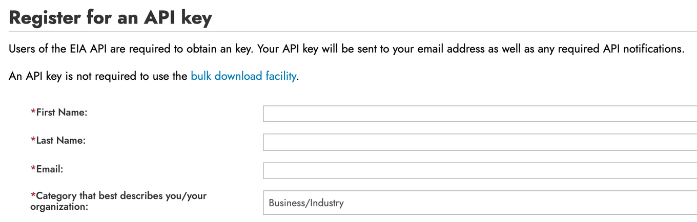
- At eia.gov/opendata/register.php, give your name, your email and a category, and accept the terms of service.
- The key is free and arrives by email. In class, the replies in
saved/stand in for your own requests. - API key: a private string that identifies you to the EIA and counts your requests. Treat it like a password.
Storing the EIA key in ~/.Renviron
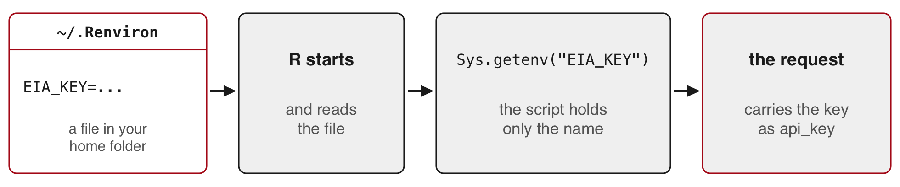
Environment variable: a named value set outside your code, which R loads when it starts.
R Console; once per computer
file.edit("~/.Renviron") # opens the file, or creates it
# add one line, keep an empty line at the end, save:
# EIA_KEY=paste-your-key-here
# restart R (RStudio: Session > Restart R), then:
nchar(Sys.getenv("EIA_KEY")) # above 0: the key loaded; 0: R did not find it- The script holds only the name, so sharing or committing the script shares no secret.
~is your home folder (on Windows, R uses your Documents folder). A Mac hides names that start with a dot, and Windows editors may add .txt to them, so open the file from R withfile.edit().
readRenviron("~/.Renviron") reloads the file without restarting R. usethis::edit_r_environ() opens the same file. R reads only one user .Renviron: a .Renviron inside a project folder hides the one in your home folder, so keep keys in ~/.Renviron.
The EIA request for one day, written as a URL
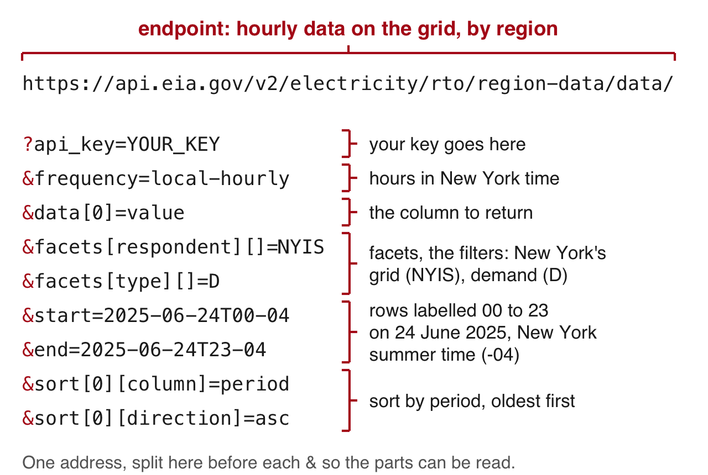
- Facet: the EIA’s word for a filter on one column. The EIA names its options with brackets.
- Sent with a key, this address returns 24 rows of New York’s demand, one per hour.
The same request as text, with your key in place of YOUR_KEY:
The one-day EIA request
https://api.eia.gov/v2/electricity/rto/region-data/data/?api_key=YOUR_KEY&frequency=local-hourly&data[0]=value&facets[respondent][]=NYIS&facets[type][]=D&start=2025-06-24T00-04&end=2025-06-24T23-04&sort[0][column]=period&sort[0][direction]=ascThe EIA’s API browser builds these names for you: choose a route (here electricity, then RTO, then region data), a frequency, the facets and the dates, and it shows the URL. The EIA documents its key only as a URL parameter. Its API documentation describes every parameter.
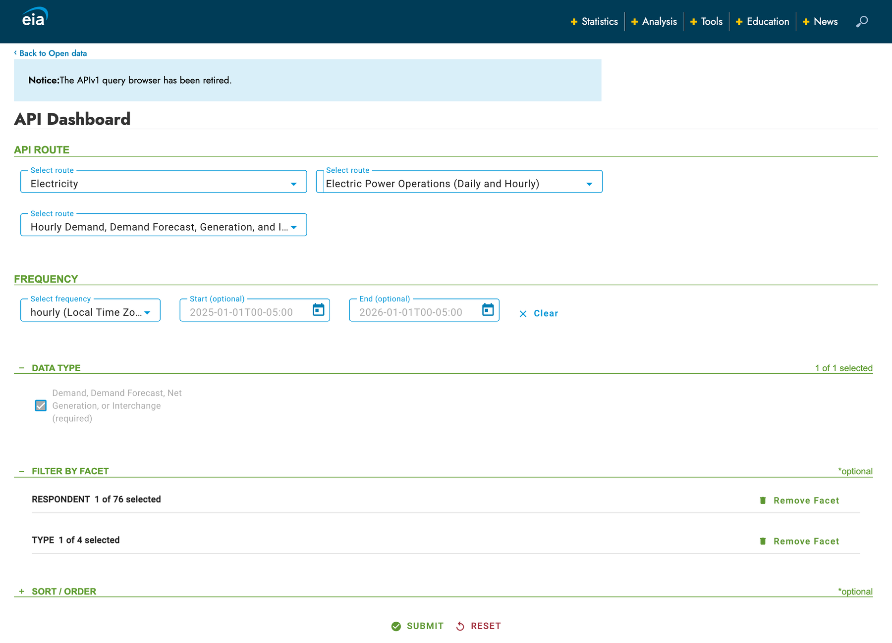
Requesting every hour of 2025 from the EIA in R
R Console, in the 14-apis folder; needs internet, httr2, jsonlite and EIA_KEY in ~/.Renviron (no key: start from saved/)
base <- request("https://api.eia.gov/v2/electricity/rto/region-data/data/")
base <- req_url_query(base, # backticks let R use names with brackets
api_key = Sys.getenv("EIA_KEY"),
frequency = "local-hourly", # hours in New York time
`data[0]` = "value", # the demand number
`facets[respondent][]` = "NYIS", # New York's grid
`facets[type][]` = "D", # D = demand
start = "2025-01-01T00-05", end = "2026-01-01T00-05", # -05: 5 hours behind UTC (4 in summer)
`sort[0][column]` = "period", # sort by hour, so that the
`sort[0][direction]` = "asc") # pages follow in order
eia_page <- function(offset) {
req <- req_url_query(base, offset = offset, length = 5000) # skip, then up to 5,000
txt <- resp_body_string(req_perform(req))
writeLines(txt, paste0("raw/eia_nyis_", offset, ".json"))
Sys.sleep(1)
fromJSON(txt)
}R Console, with your own EIA key; writes raw/eia_nyis_0.json and raw/eia_nyis_5000.json
p1 <- eia_page(0) # a page of 5,000 rows can take a minute
p2 <- eia_page(5000)eia_page()isfetch()for the EIA:offsetskips rows, andlengthcaps a page at 5,000.local-hourlyreturns New York’s clock hours. The plain"hourly"series uses UTC, the world reference clock, as many APIs do.
What the first EIA reply holds
The reply to the request for 2025, offset 0, as saved in saved/eia_nyis_0.json
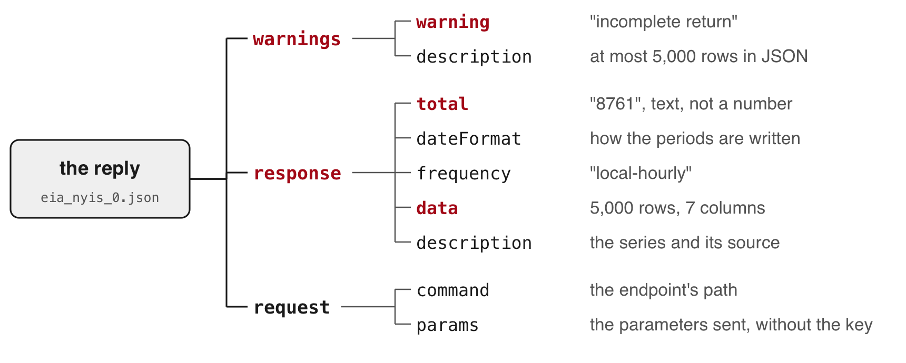
- Status 200, with a warning in the body: the API sends at most 5,000 rows in JSON.
- The second request, offset 5000, returns the other 3,761 rows.
- The values and the total arrive as text.
Stacking the two EIA pages into the 8,760 hours of 2025
R Console, in the 14-apis folder; needs jsonlite and the two saved EIA replies (or yours, in raw/)
p1 <- fromJSON("saved/eia_nyis_0.json")
p2 <- fromJSON("saved/eia_nyis_5000.json")
p1$warnings$warning#> [1] "incomplete return"eia <- rbind(p1$response$data, p2$response$data)
eia$demand <- as.numeric(eia$value) # text to numbers
c(rows = nrow(eia), total = as.numeric(p1$response$total),
hours = 365 * 24)#> rows total hours
#> 8761 8761 8760tail(eia$period, 1) # the last row: the end bound#> [1] "2026-01-01T00-05"eia <- eia[substr(eia$period, 1, 4) == "2025", ] # keep the rows of 2025
c(rows = nrow(eia), repeated = anyDuplicated(eia$period)) # repeated 0: no hour appears twice#> rows repeated
#> 8760 0- The end bound is included: 8,761 rows against 8,760 hours. Keep the rows dated 2025.
Drawing a year of hourly demand with plot()
R Console; needs eia from the stacking step
eia$date <- as.Date(substr(eia$period, 1, 10)) # "2025-06-24T19-04" -> 2025-06-24
eia$hour <- as.numeric(substr(eia$period, 12, 13)) # -> 19
par(mar = c(4, 6, 3, 1)) # room for the y-axis numbers
plot(eia$date + eia$hour / 24, eia$demand, type = "l", lwd = 0.5, yaxt = "n",
xlab = "2025, New York time", ylab = "",
main = "Hourly electricity demand, New York's grid (NYISO), 2025. Data: EIA")
at <- seq(0, 30000, 5000)
axis(2, at = at, labels = format(at, big.mark = ","), las = 1) # commas in the numbers
title(ylab = "Demand (megawatt-hours)", line = 4.5)date + hour / 24places each hour at its point within its day, so the line runs hour by hour through the year.

What the figure shows, and two hours recorded as zero
- Winter evenings reach 23,521 MWh (22 January). The year’s low is 11,061 MWh (20 April, mid-afternoon).
- Summer peaks come in late June and late July.
- The drop to zero. Two hours of 15 January read 0; the hours before and after read 21,505 and 21,943 MWh. They look like missing reports stored as 0, so set them to
NAbefore any mean, total or minimum, and addna.rm = TRUEto those calls.
R Console; needs eia
eia[eia$demand == 0, c("period", "demand")]#> period demand
#> 355 2025-01-15T18-05 0
#> 356 2025-01-15T19-05 0eia$demand[eia$demand == 0] <- NAThe peak hour of the June 2025 heat wave
R Console; needs eia
eia[which.max(eia$demand), c("period", "demand")] # the row with the largest demand#> period demand
#> 4195 2025-06-24T19-04 31857A three-day heat wave hit New York from 23 to 25 June 2025. NYISO reported 31,857 MW on 24 June, the highest on New York’s grid since 2016. The EIA labels each hour by its end, so its row 19 is the hour from 18:00 to 19:00 (6 to 7 pm). NYSRC, the council that sets the reliability rules for New York’s grid, labels the same hour by its start, 18:00.
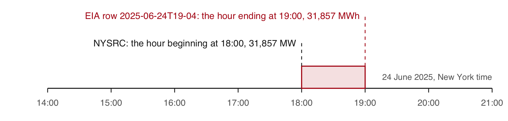
Source: NYSRC (New York State Reliability Council), June 2025 operations report.
Hour beginning and hour ending. The EIA-930 instructions ask operators to report each hour “by hour ending time”. The EIA’s row labelled 19 on 24 June covers 18:00 to 19:00, the hour NYSRC labels by its beginning, 18:00. The row labelled 00 on a date covers 11 pm to midnight of the day before. Keeping the rows dated 2025 therefore keeps the hour ending at midnight on 1 January 2025 and drops the hour ending at midnight on 1 January 2026, a one-hour shift that moves no peak.
5 · Calling a language model’s API
The World Bank, EIA and model requests compared
| World Bank | EIA | Language model | |
|---|---|---|---|
| Method | GET | GET | POST |
| Key | none | api_key in the URL |
x-api-key header |
| You send | query parameters | query parameters | a JSON body: the model, a length cap, the prompt |
| You get | JSON rows, pages, total | JSON rows, total, warnings | JSON: the text, why the model stopped, token counts |
| Cost | free | free | per token |
- Prompt: the instructions and material sent in one request.
- POST: a request that carries data in its body.
- Token: a unit of text, often part of a word, that a model reads and writes; the provider charges per token.
The prompt leaves your computer, so send only data whose terms allow it.
Getting your own API key from the provider’s console
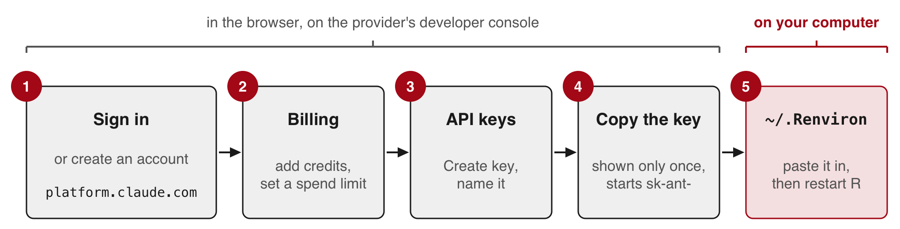
- Developer console: the provider’s website for API accounts, billing and keys (here, platform.claude.com).
- API calls are paid per token from prepaid credits. A chat subscription does not cover them.
- The console shows the key only once, so paste it into
~/.Renvironstraight away.
Today nobody needs a key. The calls run on the instructor’s computer, and their replies are in saved/.
Storing the model key in ~/.Renviron
R Console, on your own computer; once per computer
file.edit("~/.Renviron") # the same file as EIA_KEY
# add a second line, ANTHROPIC_API_KEY=paste-your-key-here; save, restart R, then:
nchar(Sys.getenv("ANTHROPIC_API_KEY")) # above 0: loaded; 0: not found- Never put a key in a script, a commit, a screenshot or a chat.
- If one leaks, delete it in the provider’s developer console and create another.
nchar()shows that the key loaded without printing it on a shared screen.
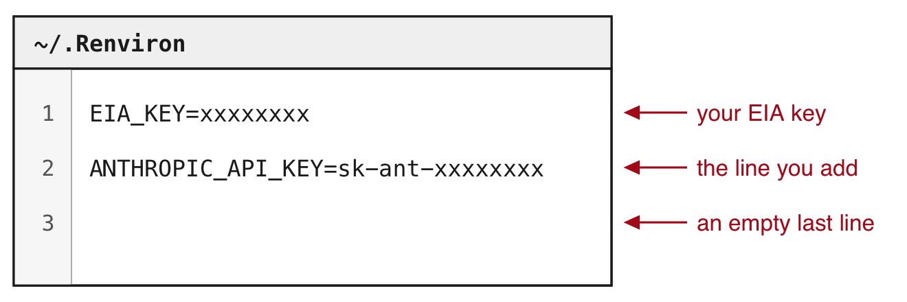
Labelling the 266 names as economies or groups
R Console, in the 14-apis folder
# needs wb: source("model_call.R")
# builds it and sends nothing
s <- sort(wb$country, method = "radix")
writeLines(s[180:190]) # 11 of the 266#> North America
#> North Macedonia
#> Northern Mariana Islands
#> Norway
#> Not classified
#> OECD members
#> Oman
#> Other small states
#> Pacific island small states
#> Pakistan
#> Palau- The task: label each of the 266 names in the World Bank’s 2023 table of access to electricity
economy: a country or a territorygroup: a region, an income group, a lending group, or the world
- Why this task
- Each label needs knowledge of what the name refers to: South Africa is an economy, Sub-Saharan Africa a group.
- The World Bank publishes the correct label for every name, so R can count how many of the model’s labels agree.
Lending group: the economies that borrow under one World Bank programme, such as IDA, which lends to the poorest countries.
Building the prompt from the 266 names
model_call.R (part), in the 14-apis folder; needs jsonlite, flat() and saved/; writes raw/model_prompt.txt
replies <- lapply(paste0("saved/wb_2023_p", 1:3, ".json"), fromJSON)
wb <- do.call(rbind, lapply(replies, flat))
# sort by name, the same way on every computer
wb <- wb[order(tolower(wb$country), method = "radix"), ]
wb$id <- 1:nrow(wb)
prompt <- paste0(
"Below are ", nrow(wb), " names from a World Bank table. Some are single ",
"economies (a country or a territory). Others are groups of economies ",
"(a region, an income group, a lending group, or the world). Label each ",
"name. Reply with CSV only: a header line id,label, then one line per ",
"name with its number and either economy or group.\n\n",
paste0(wb$id, ". ", wb$country, collapse = "\n"))
writeLines(prompt, "raw/model_prompt.txt")- The World Bank lists its 49 groups first, so a model could label by position. Sorting by name mixes the groups in with the economies.
method = "radix"sorts by character code and ignores the computer’s language settings, so every computer gets the same order.tolower()stops capitals from sorting first.- Each name gets a number; the CSV reply repeats it, so R can match each label to its name.
collapse = "\n"joins the names with"\n", a new line, so each name sits on its own line.
The first lines of the prompt sent to the model
R Console; needs prompt
p <- strsplit(prompt, "\n")[[1]] # the prompt, split into its lines
length(p) # the instructions, a blank line, 266 names#> [1] 268# the instructions, the blank line and names 1 to 7, wrapped at 75 characters
cat(strwrap(head(p, 9), 75), sep = "\n")#> Below are 266 names from a World Bank table. Some are single economies (a
#> country or a territory). Others are groups of economies (a region, an
#> income group, a lending group, or the world). Label each name. Reply with
#> CSV only: a header line id,label, then one line per name with its number
#> and either economy or group.
#>
#> 1. Afghanistan
#> 2. Africa Eastern and Southern
#> 3. Africa Western and Central
#> 4. Albania
#> 5. Algeria
#> 6. American Samoa
#> 7. Andorra- The whole prompt goes in one request.
- The three saved replies answer this prompt. A copy is in
saved/model_prompt.txt.
Putting the key in a header and the prompt in the body
model_call.R (part), plus req to print it; source("model_call.R") sets prompt and MODEL; sends nothing
req <- request("https://api.anthropic.com/v1/messages")
req <- req_headers(req, "x-api-key" = Sys.getenv("ANTHROPIC_API_KEY"),
"anthropic-version" = "2023-06-01", .redact = "x-api-key")
req <- req_body_json(req, list(model = MODEL, max_tokens = 4000,
messages = list(list(role = "user", content = prompt))))
req#> <httr2_request>
#> POST https://api.anthropic.com/v1/messages
#> Headers:
#> * x-api-key : <REDACTED>
#> * anthropic-version: "2023-06-01"
#> Body: JSON data- Headers
x-api-key: the key;.redactkeeps R from printing itanthropic-version: the version of the request format
- Body, in JSON
model:MODEL, the id on line 1 ofmodel_call.Rmax_tokens: a cap on the reply’s length and cost; the saved replies used about 1,500messages: the prompt, as one message from the user
req_body_json() makes the request a POST. Nothing is sent until req_perform().
Sending the model request from R (live)
model_send.R (part), instructor's computer; needs internet, req and a key
resp <- req_perform(req) # about 11 seconds
writeLines(resp_body_string(resp), "raw/model_live.json")
reply <- fromJSON("raw/model_live.json")
print(reply$stop_reason) # "end_turn": the model finished
labels <- read.csv(text = reply$content$text[reply$content$type == "text"])
print(table(labels$label)) # each saved run: economy 217, group 49- Each call costs money. The reply is saved to
raw/model_live.json. - The three calls sent before class took 11.0 to 11.2 seconds each (
saved/model_runs.csv). - If it fails, the next slide shows a reply saved before class.
Reading the text and the stop reason in the model’s reply
Reply to the labelling prompt, run on the instructor’s computer before class (saved/model_reply_1.json).
The file, shortened to the fields used here, with the CSV text cut after two labels.
{
"content": [
{
"type": "thinking",
"thinking": ""
},
{
"type": "text",
"text": "id,label\n1,economy\n2,group\n..."
}
],
"stop_reason": "end_turn",
"usage": {
"input_tokens": 2597,
"output_tokens": 1488,
"output_tokens_details": {
"thinking_tokens": 202
}
}
}R Console, in the 14-apis folder; needs jsonlite; no key
reply <- fromJSON("saved/model_reply_1.json")
reply$content$type#> [1] "thinking" "text"reply$stop_reason#> [1] "end_turn"txt <- reply$content$text[reply$content$type == "text"]
labels <- read.csv(text = txt) # CSV from a string
str(labels) # 266 rows, one per name#> 'data.frame': 266 obs. of 2 variables:
#> $ id : int 1 2 3 4 5 6 7 8 9 10 ...
#> $ label: chr "economy" "group" "group" "economy" ...- The content can begin with a thinking block: the reasoning the model writes before its answer. Its text is left out of the reply by default.
- Stop reason: why the reply ended.
"end_turn": the model finished."max_tokens": your cap cut it off mid-list. Read it before the text.
The World Bank’s own list of economies and groups
R Console, in the 14-apis folder; needs internet and httr2; no key; writes raw/wb_countries.json
req_cl <- request("https://api.worldbank.org/v2/country")
req_cl <- req_url_query(req_cl, format = "json", per_page = 400) # every entry, one page
writeLines(resp_body_string(req_perform(req_cl)), "raw/wb_countries.json")The copy saved before class ships in saved/:
R Console, in the 14-apis folder; needs jsonlite and saved/wb_countries.json (or yours, in raw/)
cl <- fromJSON("saved/wb_countries.json")[[2]]
nrow(cl)#> [1] 296table(cl$region$value == "Aggregates") # TRUE: a group of economies#>
#> FALSE TRUE
#> 217 79- Each entry has a name and a region. The World Bank gives every group the region
"Aggregates". - The list has 296 entries: the same 217 economies as the table, and 79 groups.
- The table uses 49 of the 79 groups.
- Reference list: labels you already trust, used to measure the model’s.
The same list is in the browser at api.worldbank.org/v2/country?format=json&per_page=400. Its other fields give each economy’s income group and lending category.
The model’s labels compared with the World Bank’s list
R Console; needs wb from model_call.R, labels from the reply, and cl
miss <- is.na(match(wb$country, cl$name)) # TRUE: no exact match in the list
wb$country[miss]#> [1] "Latin America & Caribbean" "Sub-Saharan Africa"pos <- match(trimws(wb$country), trimws(cl$name)) # each name's row in the list
wb$reference <- ifelse(cl$region$value[pos] == "Aggregates", "group", "economy")
wb$model <- labels$label[match(wb$id, labels$id)] # each label on its name, by number
table(model = wb$model, list = wb$reference)#> list
#> model economy group
#> economy 217 0
#> group 0 49sum(wb$model == wb$reference)#> [1] 266- The list writes those two names with a space at the end (
"Sub-Saharan Africa ").trimws()removes spaces at the start and end of a text, so every name finds its row. - The model agrees with the World Bank on all 266 names.
- The model has likely seen this list: these names and groups are on many public pages.
- On your own texts, measure agreement on a hand-labelled sample before trusting the rest.
Matching by the three-letter code instead of the name fails for five groups whose countryiso3code is empty in the table: “High income”, “Low income”, “Lower middle income”, “Upper middle income” and “Not classified”.
Tokens and what a call costs
The same reply (saved/model_reply_1.json).
R Console; needs reply and wb
c(input = reply$usage$input_tokens, # tokens in the prompt
output = reply$usage$output_tokens, # written, reasoning included
reasoning = reply$usage$output_tokens_details$thinking_tokens) # of which reasoning#> input output reasoning
#> 2597 1488 202round(c(input = reply$usage$input_tokens,
output = reply$usage$output_tokens) / nrow(wb), 1) # per name#> input output
#> 9.8 5.6cost in dollars = (input tokens × input price + output tokens × output price) / 1,000,000, with prices in dollars per million tokens. This call: (2,597 × input price + 1,488 × output price) / 1,000,000.
- Prices are on the provider’s pricing page.
- Each name adds about 10 tokens in and 6 out.
- Twice the names cost about twice as much.
Tokens, cost and three runs of the same request
R Console, in the 14-apis folder; needs jsonlite, the three saved replies and wb with its reference column
runs <- lapply(paste0("saved/model_reply_", 1:3, ".json"), fromJSON) # three runs of the labelling request
run_row <- function(r) {
lab <- read.csv(text = r$content$text[r$content$type == "text"])
data.frame(input = r$usage$input_tokens, output = r$usage$output_tokens,
reasoning = r$usage$output_tokens_details$thinking_tokens,
agree = sum(lab$label[match(wb$id, lab$id)] == wb$reference))
}
do.call(rbind, lapply(runs, run_row)) # tokens; agree: names whose label matches the list#> input output reasoning agree
#> 1 2597 1488 202 266
#> 2 2597 1489 203 266
#> 3 2597 1492 206 266- Cost in dollars = (input tokens × input price + output tokens × output price) / 1,000,000, with prices per million tokens on the provider’s pricing page. Each name adds about 10 tokens in and 6 out.
- All three runs gave the same 266 labels, each matching the list. Nothing guarantees the same labels on the next run, so each reply is saved.
- Temperature, a setting for how much replies vary: the same request sent with
temperature = 0got status 400, because this model no longer accepts it.
R Console, in the 14-apis folder; needs jsonlite and saved/model_temperature0.json
fromJSON("saved/model_temperature0.json")$error$message#> [1] "`temperature` is deprecated for this model."saved/model_runs.csv records each run’s status, the seconds it took (11.0 to 11.2), its stop reason, its token counts, its rows and its agreement with the World Bank’s list. A request that fails, such as the one with temperature = 0, is not billed.
When to call a model from R, and when to have it write R

- Call a model from R, through its API, in your script
- examples: job titles to occupation codes, open survey answers to categories
- the same request reruns on thousands of items
- today: the 266 names, scored by the World Bank’s list
- Have a model write R, in a chat assistant or a coding agent (a program that writes and runs code on your computer)
- R computes the answer exactly and for free
- a task of this kind today: the peak hour, one line of R (
which.max()) on 8,760 hours
Rule of thumb: if a formula, a rule or a list gives the answer, compute it in R. If each item needs reading, send the items to the model and measure its labels on a hand-labelled sample.
The labelling task fits the first route: the same question about each of 266 names, answered by reading them. The World Bank’s list also gives the answer for these names, so in your own work you would join it in R. The session uses the task because that known answer measures the model. Job titles, open survey answers, firm descriptions and news headlines have no such list. The peak hour fits the second route: a model asked for it reads 8,760 numbers and makes a claim, while one line of R gives the answer. Both routes end with a step you verify yourself: agreement with a hand-labelled sample or a reference for the labels, and a reading of the code for the computation.
Keeping API keys out of the repo and away from the agent
When a coding agent writes and runs your R code:
- The key stays in
~/.Renviron, outside the project. The code readsSys.getenv("EIA_KEY"); the agent never needs the key itself. - Never paste a key into the chat. What the agent reads, files and printed output included, goes to the model’s provider with the conversation.
- Keep
ANTHROPIC_API_KEYout of your shell’s startup file. An agent started from that shell can use it and bill your API credits instead of your subscription. - Before each commit, read what you are about to commit (
git diff --cached). - If a key leaks, delete it in the provider’s console and create a new one. Removing it from the repo does not undo the leak.
CLAUDE.md: the agent's instructions, in the project
API keys are in ~/.Renviron.
Read them with Sys.getenv("NAME").
Never print a key, write it to a
file or put it in printed output..claude/settings.json: the agent may not open the file
{
"permissions": {
"deny": ["Read(~/.Renviron)"]
}
}The instructions are a request. The setting is enforced on the agent’s own reads, cat included, but not on the code it runs: R still reads the file when it starts, which is how your script gets the key.
Both files are Claude Code’s; other coding agents have their own instructions file and permission settings. The deny rule’s syntax and its limits are in Claude Code’s permissions documentation, and how it picks up ANTHROPIC_API_KEY from the shell is in its authentication documentation. A key kept in ~/.Renviron is read only by R, so the agent’s own login is unaffected.
Practice
# Practice. Run in the 14-apis folder after source("wb_functions.R"), or
# work from the files in saved/. Tasks 6 and 7 need your own EIA key and
# the base request and eia_page() from the EIA request. Task 8 needs eia
# from the stacking step. Tasks 9 and 10: run source("model_call.R") first;
# it builds wb, prompt and req from saved/ and sends nothing.
# World Bank requests
# 1. Add an indicator argument to fetch(). Request agricultural land
# (% of land area, AG.LND.AGRI.ZS) for 2020, every page. Compare the
# rows with the total. How many economies have no value?
# 2. In one URL, request China's and India's access to electricity for
# 2000 to 2023 (country/CHN;IND, date=2000:2023). Plot both series.
# 3. Request 2023 at 20 rows a page. How many requests does that take,
# and how long with Sys.sleep(1) between them?
# Errors and packages
# 4. Misspell the country code (INDD), then the indicator code
# (EG.ELC.ACCS.ZZ). Record the status and body of each. Add a line to
# fetch() that stops with the API's message when a reply has no total.
# 5. Get the 2023 table with WDI(..., extra = TRUE). Compare its row
# count and India's value with yours; drop the rows whose region is
# "Aggregates" (the groups of economies).
# The EIA (your own key)
# 6. Store your EIA key and confirm it loaded with nchar(). Request NYIS
# demand for 24 June 2025 only (start 2025-06-24T00-04, end
# 2025-06-24T23-04). Compare the 24 rows with the same day in saved/.
# 7. Request every hour of 2025, local time, for Texas (ERCO, ERCOT, which
# runs most of Texas's grid) or California (CISO, the California
# Independent System Operator). Their hours carry their own offsets:
# -06 for ERCO, -08 for CISO. Rows against the total and the calendar;
# hours at 0; the peak hour.
# 8. Compute New York's daily peaks with
# tapply(eia$demand, eia$date, max, na.rm = TRUE). List the ten highest
# days. How many fall in June and July?
# Model replies
# 9. From saved/model_reply_1.json to _3.json: input and output tokens,
# per name too, and each run's cost at prices from the provider's
# pricing page. What would labelling 10,000 names cost?
# 10. Draw 20 names: set.seed(6850); s <- sort(sample(wb$id, 20)). Label
# each one economy or group by hand, before you look at any answer.
# Compare your labels with the model's (saved/model_reply_1.json) and
# with the World Bank's list. With your own key: run
# source("model_send.R") and compare your run's labels with the saved
# ones.
TipSolutions
1. 266 rows against a total of 266. Eight rows have no value, seven of them economies. flat() still names the column access.
fetch <- function(p, year, per, indicator = "EG.ELC.ACCS.ZS") {
req <- request(paste0("https://api.worldbank.org/v2/country/all/indicator/", indicator))
req <- req_url_query(req, date = year, format = "json", per_page = per, page = p)
txt <- resp_body_string(req_perform(req))
writeLines(txt, paste0("raw/wb_", indicator, "_", year, "_p", p, ".json"))
Sys.sleep(1)
fromJSON(txt)
}
first <- fetch(1, 2020, 100, indicator = "AG.LND.AGRI.ZS")
ag_replies <- lapply(1:first[[1]]$pages, fetch, year = 2020, per = 100,
indicator = "AG.LND.AGRI.ZS")
ag <- do.call(rbind, lapply(ag_replies, flat))
c(rows = nrow(ag), total = first[[1]]$total, no_value = sum(is.na(ag$access)))
ag$country[is.na(ag$access)] # one group and seven economies2. total is 48: 24 years for each country, in one page.
r <- request("https://api.worldbank.org/v2/country/CHN;IND/indicator/EG.ELC.ACCS.ZS")
r <- req_url_query(r, date = "2000:2023", format = "json", per_page = 100)
two <- flat(fromJSON(resp_body_string(req_perform(r))))
nrow(two) # 48
two$year <- as.numeric(two$year)
ind <- two[two$iso3 == "IND", ]
chn <- two[two$iso3 == "CHN", ]
plot(ind$year, ind$access, type = "l", ylim = c(0, 100), las = 1,
xlab = "Year", ylab = "Access to electricity (% of population)")
lines(chn$year, chn$access, lty = 2)
legend("bottomright", c("India", "China"), lty = 1:2)3. 14 pages, so 14 requests (15 if you request page 1 first, as on the slides), and 266 rows. Sys.sleep(1) adds at least 14 seconds of waiting to the time each reply takes. In testing, uncached pages of 20 rows took from a few seconds to a minute each, and the 15 requests took close to four minutes.
first <- fetch(1, 2023, 20)
first[[1]]$pages
system.time(replies20 <- lapply(1:first[[1]]$pages, fetch, year = 2023, per = 20))
nrow(do.call(rbind, lapply(replies20, flat)))4. Both misspellings return status 200 with the same body: message id 120, “The provided parameter value is not valid”. A good reply has a total in its first part; this one has none.
bad <- request("https://api.worldbank.org/v2/country/INDD/indicator/EG.ELC.ACCS.ZS")
bad <- req_url_query(bad, date = 2023, format = "json")
resp_bad <- req_perform(bad)
resp_status(resp_bad) # 200
writeLines(resp_body_string(resp_bad)) # message id 120
# fetch() from solution 1, with one more line
fetch <- function(p, year, per, indicator = "EG.ELC.ACCS.ZS") {
req <- request(paste0("https://api.worldbank.org/v2/country/all/indicator/", indicator))
req <- req_url_query(req, date = year, format = "json", per_page = per, page = p)
txt <- resp_body_string(req_perform(req))
writeLines(txt, paste0("raw/wb_", indicator, "_", year, "_p", p, ".json"))
Sys.sleep(1)
reply <- fromJSON(txt)
if (is.null(reply[[1]]$total)) stop(txt) # no total: the body is a message
reply
}
fetch(1, 2023, 100, indicator = "EG.ELC.ACCS.ZZ") # stops with the API's message5. WDI() sends the same requests and returns a data frame; with extra = TRUE it adds a region column, which reads “Aggregates” for the groups. Compare the rows with 266 before the drop and with the economies after it, and India’s value with 99.5.
library(WDI)
w <- WDI(country = "all", indicator = c(access = "EG.ELC.ACCS.ZS"),
start = 2023, end = 2023, extra = TRUE)
nrow(w)
w[w$iso3c == "IND", c("country", "year", "access")]
w <- w[w$region != "Aggregates", ]
nrow(w)6. 24 rows, from 2025-06-24T00-04 to 2025-06-24T23-04. The peak row is 2025-06-24T19-04 at 31,857, the same as in saved/. req_url_query() replaces a parameter the request already has, so the base request takes the new dates.
one_day <- req_url_query(base, start = "2025-06-24T00-04", end = "2025-06-24T23-04")
one <- fromJSON(resp_body_string(req_perform(one_day)))$response$data
nrow(one)
one[which.max(as.numeric(one$value)), c("period", "value")]7. Replace the respondent and the bounds in base; eia_page() then sends the new request (it still names its files eia_nyis_). Keep the rows dated 2025, as for New York.
base <- req_url_query(base, `facets[respondent][]` = "ERCO",
start = "2025-01-01T00-06", end = "2026-01-01T00-06")
pages <- lapply(c(0, 5000), eia_page)
tx <- do.call(rbind, lapply(pages, function(p) p$response$data))
tx$demand <- as.numeric(tx$value)
c(rows = nrow(tx), total = as.numeric(pages[[1]]$response$total))
tx <- tx[substr(tx$period, 1, 4) == "2025", ]
c(rows = nrow(tx), zeros = sum(tx$demand == 0))
tx[which.max(tx$demand), c("period", "demand")]8. 24 June (31,857), 25 June (30,646) and 29 July (30,645) lead. All ten days fall in June and July.
peaks <- tapply(eia$demand, eia$date, max, na.rm = TRUE)
top <- sort(peaks, decreasing = TRUE)[1:10]
top#> 2025-06-24 2025-06-25 2025-07-29 2025-06-23 2025-07-30 2025-07-28 2025-07-16
#> 31857 30646 30645 30007 29758 29573 28930
#> 2025-07-17 2025-07-25 2025-07-08
#> 28587 28300 28247table(months(as.Date(names(top))))#>
#> July June
#> 7 39. Each run sent 2,597 input tokens and wrote 1,488 to 1,492: about 10 in and 6 out per name. Multiply by the prices on the pricing page and divide by a million. 10,000 names take about 38 calls of this size, so about 38 times the cost of one. Send them in batches of a few hundred: a reply longer than max_tokens stops with "max_tokens".
runs <- lapply(paste0("saved/model_reply_", 1:3, ".json"), fromJSON)
tokens <- sapply(runs, function(r) c(input = r$usage$input_tokens,
output = r$usage$output_tokens))
tokens#> [,1] [,2] [,3]
#> input 2597 2597 2597
#> output 1488 1489 1492round(tokens / nrow(wb), 1) # per name#> [,1] [,2] [,3]
#> input 9.8 9.8 9.8
#> output 5.6 5.6 5.6# cost of each run, with prices per million tokens p_in and p_out:
# (tokens["input", ] * p_in + tokens["output", ] * p_out) / 1e610. The 20 names, with the model’s label and the World Bank’s. Compare your own labels with both columns. A random 20 holds only two groups here, so it says little about how well groups are labelled. When one label is rare, draw the sample within the model’s labels (for example 10 names it called group and 10 it called economy), or draw a larger sample.
cl <- fromJSON("saved/wb_countries.json")[[2]]
pos <- match(trimws(wb$country), trimws(cl$name))
wb$reference <- ifelse(cl$region$value[pos] == "Aggregates", "group", "economy")
reply <- fromJSON("saved/model_reply_1.json")
labels <- read.csv(text = reply$content$text[reply$content$type == "text"])
wb$model <- labels$label[match(wb$id, labels$id)]
set.seed(6850)
s <- sort(sample(wb$id, 20))
wb[s, c("id", "country", "model", "reference")]#> id country model reference
#> 52 5 Algeria economy economy
#> 74 28 Bosnia and Herzegovina economy economy
#> 77 31 British Virgin Islands economy economy
#> 87 42 Central African Republic economy economy
#> 99 55 Cuba economy economy
#> 7 64 East Asia & Pacific group group
#> 118 84 France economy economy
#> 130 96 Guatemala economy economy
#> 181 166 Mongolia economy economy
#> 194 179 Nigeria economy economy
#> 195 181 North Macedonia economy economy
#> 205 195 Philippines economy economy
#> 212 204 Rwanda economy economy
#> 214 206 San Marino economy economy
#> 225 218 Solomon Islands economy economy
#> 237 235 Sweden economy economy
#> 241 239 Tanzania economy economy
#> 246 244 Trinidad and Tobago economy economy
#> 252 250 Uganda economy economy
#> 48 255 Upper middle income group group# with your own key: send the request again and compare the two runs
saved_labels <- labels$label # the labels in saved/model_reply_1.json
source("model_send.R") # sends it; labels now holds your run's
sum(labels$label == saved_labels) # names on which the two runs agreeQuick reference
| Function | What it does |
|---|---|
request(url) |
starts a request to an address |
req_url_query(req, name = value) |
adds query parameters to the URL, or replaces them |
req_headers(req, name = value) |
adds a header |
req_headers(req, name = value, .redact = "name") |
adds a header that R never prints, for a key |
req_body_json(req, list(...)) |
adds a JSON body and makes the request a POST |
req_perform(req) |
sends the request and waits for the reply |
resp_status(resp) |
the reply’s status code |
resp_body_string(resp) |
the reply’s body as text |
fromJSON(txt) |
JSON text, or a JSON file, to R lists and data frames |
read.csv(text = txt) |
reads CSV from a string, such as a model’s reply |
order(tolower(x), method = "radix") |
alphabetical order, the same on every computer |
match(x, y) |
the position of each element of x in y |
trimws(x) |
removes spaces at the start and end of a text |
writeLines(txt, file) |
saves the reply as it arrived |
Sys.getenv("NAME") |
reads an environment variable, such as a key |
Sys.sleep(1) |
waits one second |
file.edit("~/.Renviron") |
opens the file that holds your keys |
Sources. Akbar, Couture, Duranton & Storeygard (AER, 2023); Fujiwara, Müller & Schwarz (JEEA, 2024). World Bank, World Development Indicators, EG.ELC.ACCS.ZS, and the World Bank’s country list (Creative Commons Attribution 4.0). U.S. Energy Information Administration, Hourly Electric Grid Monitor, NYISO demand. NYISO’s heat-wave notice and NYSRC’s June 2025 operations report, linked above.
The replies in saved/ were requested (the model’s id is on the first line of model_call.R), the screenshots captured and the console steps written in October 2026; pages and menu names may have changed since.
Links: slides · httr2 · World Bank Indicators API · EIA API documentation · EIA API browser · EIA key registration · the provider’s API reference · Syllabus